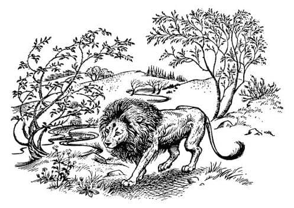
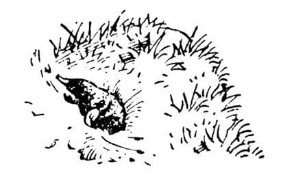
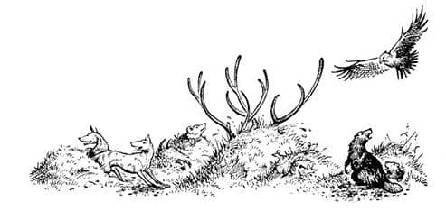
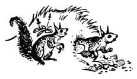
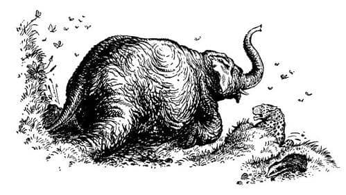
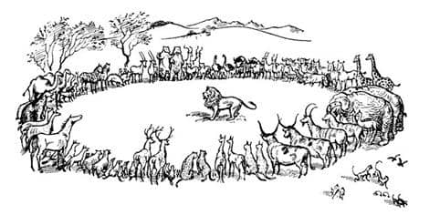

Narnia’nın Kuruluşu
Aslan, bu bomboş alanda ileri geri yürüyor ve yeni şarkısını söylüyordu. Yıldızları ve güneşi çağırdığı şarkıdan daha yumuşak ve daha oynak bir şarkıydı; nazik ve küçük dalgacıklar gibi bir şarkı. Ve şarkı söyleyip yürüdükçe tüm vadi yeşil otlarla kaplanıyor, Aslan’ın çevresinden, sanki bir havuzdaki dalgacıklar gibi her tarafa yayılıyordu. Otlar küçük tepeciklere bir dalga gibi tırmandı, birkaç dakika sonra da uzaktaki dağların eteklerine ulaştı. Geçen her an, bu genç dünyaya hayat veriyordu. Şimdi hafif rüzgârın otları hışırdattığı duyulmaktaydı. Çok geçmeden, otların yanında başka şeyler de çıktı. Yükseklikler çalılarla kopkoyu kaplandı. Vadinin bazı bölümlerinde, salkım salkım ve dikenli bir şeyler belirdi. Bir tanesi epeyce yakınında belirene kadar Digory bunların ne olduğunu bilmiyordu. Yeşillikle kaplı düzinelerce kolu olan ve kolları iki saniyede bir, birkaç santim büyüyen bir şeydi bu. Digory’nin çevresinde düzinelerce bu şeylerden vardı şimdi. Bunlar kendi boyuna ulaştıklarında ne olduklarını gördü. “Ağaçlar!” diye bağırdı.
Polly’nin sonradan söylediği gibi, rahatsız edici tek şey, bu olayı seyretmek için yalnız bırakılmayışlarıydı. Digory, “Ağaçlar!” diye bağırdığında öteye sıçramak zorunda kalmıştı, çünkü Andrew Dayı yaklaşmış ve elini Digory’nin cebine atmak üzereydi. Bunun Andrew Dayı’ya pek yararı olmayacaktı çünkü Digory’nin sağ cebini hedeflemişti ve hâlâ yeşil yüzüklerin “eve götüren” yüzükler olduğunu düşünüyordu. Ancak kuşkusuz, Digory de yüzükleri kaybetmek istemiyordu.
“Dur!”diye bağırdı Cadı. “Geri dur. Hayır, daha geriye. Çocuklara on adımdan fazla yaklaşanın beynini dağıtırım!” Sokak lambasının direğinden söküp aldığı demir çubuğu kaldırmış, fırlatmaya hazırdı. Nedense kimse iyi nişan alacağından kuşku duymuyordu.
“Demek öyle?” dedi. “Çocuklarla kendi dünyana kaçıp beni burada bırakacaktın ha.”
Andrew Dayı’nın huysuzluğu sonunda korkusunun üstesinden geldi ve “Evet bayan, kaçacaktım” dedi. “Ona ne şüphe. Şurası kesin ki kaçmak hakkımdır. Utanmazca, kötü davrandınız bana. Gücüm yettiğince size kibarlık göstermek için elimden geleni yaptım. Peki benim ödülüm ne oldu? Siz hatırı sayılır bir kuyumcuyu soydunuz – kelimeyi tekrar edeyim – soydunuz. Gösterişliliği bir yana, son derece pahalı bir yere yemeğe götürmem için ısrar ettiniz; hem de saatimi ve zincirimi rehin bırakmak zorunda kalmama karşın. (Ve bayan size söylemeliyim ki ailemizde kimse rehincilere uğramak alışkanlığında değildir; kuzenim Edward dışında, o da gönüllü süvari alayındaydı). Hazmedilmesi zor bu yemek sırasında – şu anda bunun kötü etkilerini hissediyorum – konuşmalarınız ve davranışlarınız orada bulunan herkesin pek de hoş olmayan bakışlarına neden oldu. Herkesin önünde rezil olduğumu hissediyorum. Bir daha asla o lokantaya gidemem. Polise saldırdınız. Çaldınız—”
“Of bunları kendine sakla beyefendi, kendine sakla” dedi Arabacı. “Şu anda yapılacak olan şey seyretmek ve dinlemektir, konuşmak değil.”
Doğrusu seyredilecek ve dinlenecek çok şey vardı. Digory’nin ilk fark ettiği ağaç şimdi iyice büyümüştü. Bu, dalları onun başının üzerinde hafif hafif sallanan bir kayın ağacıydı. Hava serindi. Papatya ve düğün çiçeklerinin serpildiği bir çimenlikte ayakta duruyorlardı. Biraz ileride, nehrin kenarında söğüt ağaçları büyümekteydi. Öbür taraflarını, orman gülleri, leylak ve kuşüzümü dalları çevreliyordu. At, harika taze çimenleri iştahla yiyordu. Bütün bunlar olurken Aslan şarkı söylüyor, ileri geri ve sağa sola heybetli yürüyüşünü sürdürüyordu. Onları telaşlandıran şey, Aslan’ın her dönüşte kendilerine daha da yaklaşmasıydı. Polly şarkıyı gittikçe daha ilginç bulmaya başlamıştı, çünkü müzik ile olan biten arasındaki ilişkiyi görmeye başladığını düşünüyordu. Yaklaşık yüz metre ilerideki bir bayırın sırtında bir sıra köknar ağacı belirdiğinde, bu olayın Aslan’ın biraz önce söylediği uzun ve derin notalarla bağlantılı olduğunu hissetmişti. Ve Aslan hızlı ve yüksek notalar serisine atladığında, her yerde aniden beliren çuha çiçeklerine hiç de şaşırmamıştı. Böylece, anlatılamaz bir heyecanla, her şeyin “Aslan’ın kafasından” çıktığı kanısına vardı. Şarkısını dinlediğinizde, yapacağı şeyleri dinliyordunuz, etrafınıza bakındığınızda onları görüyordunuz. Bu o kadar heyecan vericiydi ki korkmaya vakti olmamıştı. Fakat Digory ve Arabacı, Aslan’ın her turunda daha yakına gelmesi nedeniyle endişelerine engel olamıyorlardı. Andrew Dayı’ya gelince, dişleri takırdıyordu ama dizleri titrediği için kaçamıyordu da. Aniden Cadı cesaretle Aslan’a doğru yürüdü. Aslan yavaş adımlarla şarkısını sürdürerek yaklaşıyordu. Yalnızca on iki metre uzaktaydı. Cadı kolunu kaldırdı ve demir çubuğu Aslan’ın kafasına doğru savurdu.

Hiç kimsenin, özellikle Jadis’in bu uzaklıktan hedefi kaçırması mümkün değildi. Çubuk Aslan’ın gözlerinin tam ortasına çarptı. Oradan sıçrayıp küt diye çimlere düştü. Aslan hâlâ geliyordu. Yürüyüşü, öncesine göre ne daha yavaş, ne de hızlıydı; vurulduğunu bilip bilmediğini bile söylemek mümkün değildi. Yumuşak ayakları ses çıkarmamasına karşın, onların ağırlığı altında yerin sallandığını hissedebiliyordunuz.
Cadı bağırarak kaçtı; kısa sürede ağaçların arasında kaybolmuştu. Andrew Dayı da aynı şeyi yapmak üzere döndü, bir köke takıldı ve nehre dökülen küçük bir dereciğe yüzüstü düştü. Çocuklar kımıldayamıyorlardı. Ne yapmak istediklerinden bile emin değillerdi. Aslan onlara bakmadı bile. Kocaman kırmızı ağzı açıktı ama şarkı söylemek ya da kükremek için değil. O kadar yakınlarından geçti ki yelesine dokunabilirlerdi. Dönüp kendilerine bakacağından çok korkmuşlardı, fakat gariptir ki, bakmasını da istiyorlardı. Sanki görünmez ve koklanmaz birileriydiler. Aslan onları geçip birkaç adım daha gittikten sonra döndü, yeniden yanlarından geçti ve doğuya doğru yürüyüşüne devam etti.
Andrew Dayı, öksürerek ve anlaşılmaz şeyler söyleyerek ayağa kalktı.
“Digory” dedi, “kadından kurtulduk ve vahşi Aslan da uzaklaştı. Elini ver ve yüzüğünü tak hemen.”
“Yaklaşma” dedi Digory, ondan uzaklaşarak. “Onun uzağında dur, Polly. Gel buraya yanıma. Seni uyarıyorum Andrew Dayı, bir adım daha atarsan, ortadan kayboluruz.”
“Söylediğimi hemen yap, küçük bey” dedi Andrew Dayı. “Sen son derece itaatsiz, kötü davranışlı, küçük bir çocuksun.”
“Korkma” dedi Digory. “Biz kalıp ne olacağını görmek istiyoruz. Senin diğer dünyaları tanımak istediğini düşünüyordum. Şimdi burada bulunmaktan hoşlanmıyor musun?”
“Hoşlanmak mı?” diye bağırdı Andrew Dayı. “Halime bak. Bu benim en iyi ceketim ve yeleğimdi.” Gerçekten çok kötü görünüyordu şimdi; kuşkusuz ne kadar iyi giyinirseniz giyinin, paramparça olmuş bir arabadan çıktıktan ve çamurlu bir dereye düştükten sonra ancak böyle görünürdünüz. “Buranın çok ilginç bir yer olmadığını söylemiyorum” diye ekledi. “Eğer daha genç olsaydım, belki genç ve hareketli birini buraya getirebilirdim önce. Bu ülkede bir şeyler yapmak mümkün. İklimi hoş. Hiç böyle hava solumamıştım. Eğer şartlar uygun ol – olsaydı inanıyorum ki bana çok iyi gelirdi. Bir silahım olsaydı eğer.”
“Silahların canı cehenneme” dedi Arabacı. “Sanırım ben gidip Çilek’i tımar edeceğim. Bu at tanıdığım bazı insanlardan daha akıllı.” Çilek’in yanına yürüdü ve seyislerin yaptığı gibi ıslık çalmaya başladı.
“Bu Aslan’ın tabancayla öldürülebileceğine hâlâ inanıyor musun?” diye sordu Digory, “Demir çubuğa pek aldırmadı.”
“Cadı’nın hataları olmasına karşın” dedi Andrew Dayı, “yürekli bir kadın, oğlum. Yaptığı şey cesurcaydı.” Gerçekten orada olsa, Cadı’nın kendisini yine korkutacağını sanki unutmuş gibi ellerini ovuşturup, parmaklarını çatırdattı.
“Aşağılık bir şeydi yaptığı” dedi Polly. “Aslan ona ne zarar verdi ki?”
“Tanrım! Bu da ne?” dedi Digory. Birkaç metre ötedeki bir şeyi incelemek üzere ileri atıldı. “Polly, ben derim ki” diye bağırdı, “gel ve bak.”
Andrew Dayı da Polly ile birlikte geldi, fakat görmek istediği için değil, çocukların yakınında olmak istediğindendi bu – yüzükleri çalma şansı olabilirdi. Ancak Digory’nin neye baktığını görünce o bile ilgilenmeye başladı. Bu, yaklaşık bir metre yüksekliğinde ve onlar seyrederken, oranlı olarak uzayıp kalınlaşan ve aslında ağaçların büyüdüğü gibi büyüyen, lamba direğinin kusursuz, küçük bir modeliydi.
“Canlı bu – yani demek istiyorum ki ışığı yanıyor” dedi Digory. Evet öyleydi, kuşkusuz güneşin parlaklığı, gölgeniz lambanın ışığı üzerine düşmedikçe görüşü zorlaştırıyordu.
“Olağanüstü, çok olağanüstü.” diye mırıldandı Andrew Dayı. “Ben bile böyle bir büyüyü asla düşünmemiştim. Her şeyin, bir lamba direğinin bile canlanıp büyüdüğü bir dünyadayız. Şimdi lamba direğinin ne biçim bir tohumdan büyüdüğünü merak ediyorum.”
“Görmüyor musun?” dedi Digory. “Burası demir çubuğun – Cadı’nın lamba direğinden söktüğü çubuk – düştüğü yer. Yere saplanmıştı ve şimdi küçük bir lamba direği olarak yeniden büyüyor.” (Fakat o kadar küçük değildi artık; Digory bunu söylerken boyu onunki kadardı).
“Doğru! Harikulade, harikulade” dedi Andrew Dayı, ellerini daha sertçe ovuşturarak. “Ha, ha! Benim büyülerime güldüler. Aptal kız kardeşim benim deli olduğumu sanıyor. Şimdi ne diyeceklerini merak ediyorum. Her yerinde bir şeyin yetiştiği ve yaşam fışkıran bir dünya keşfettim. Kolomb, herkes Kolomb hakkında konuşur. Amerika bunun yanında nedir ki? Bu ülkenin ticari olanakları sınırsız. Eski, hurda demir parçalarını getir buraya, göm ve lokomotif, savaş gemisi, ne istersen o olarak büyüsün. Maliyet sıfır ve ben onları İngiltere’de piyasa fiyatına satabilirim. Ve sonra iklim! Kendimi şimdiden olduğumdan çok daha genç hissediyorum. Burayı bir sağlık merkezi olarak işletebilirim. Burada, iyi bir sanatoryum yılda yirmi bin getirebilir. Kuşkusuz sırrımı birkaç kişiye söylemem gerekecek. İlk yapılacak şey şu hayvanı vurmak.”
“Aynen Cadı gibisin” dedi Polly. “Bütün düşüncen her şeyi öldürmek.”
“Ve bana gelince” diye devam etti Andrew Dayı, mutlu bir rüyadaymış gibi. “Buraya yerleşirsem kim bilir kaç yıl yaşarım? Altmışına basan biri için, hesaba katılması gereken bir şey bu. Bu ülkede bir gün bile yaşlanmazsam pek şaşırmam! Harikulade! Gençlik ülkesi.”
“Oh!” diye bağırdı Digory. “Gençlik ülkesi! Gerçekten gençlik ülkesi mi?” Çünkü o anda, Letty Teyze’nin üzümleri getiren kadına söylediklerini hatırlamıştı ve o tatlı umut tüm varlığını kaplamıştı. “Andrew Dayı” dedi, “burada annemi iyi edebilecek bir şey var mı?”
“Sen neden söz ediyorsun?” dedi Andrew Dayı. “Burası eczane değil ki. Fakat söylediğim gibi—”
“Anneme üç kuruşluk bile değer vermiyorsun” dedi Digory hırçın bir sesle. “İlgileneceğini sanmıştım; o benim annem olduğu kadar senin de kız kardeşin. Ama fark etmez. Aslan’a, bana yardım edip edemeyeceğini soracağım.” Geriye döndü ve hızlı adımlarla uzaklaştı. Polly bir an bekledikten sonra arkasından koştu.
“Hey! Dur! Geri gel! Oğlan delirdi” dedi Andrew Dayı. Çocukları güvenli bir mesafeden izlemeye başladı, çünkü ne yeşil yüzüklerden uzakta kalmak, ne de Aslan’ın yakınına gitmek istiyordu.
Digory birkaç dakikada ormanın kıyısına geldi ve orada durdu. Aslan hâlâ şarkı söylüyordu. Fakat şimdi melodi bir kez daha değişmişti. Şimdi daha çok nağme dememiz gereken bir şeye benziyordu fakat aynı zamanda daha da çılgıncaydı. İnsanda koşma, sıçrama ve tırmanma isteği uyandırıyordu. Haykırmaya zorluyordu. Diğer insanlara doğru koşup, ya onları kucaklamaya ya da kavga etmeye kışkırtıyordu. Digory’yi ateş basmıştı, yüzü kıpkırmızıydı. Şarkı Andrew Dayı’yı da biraz etkilemişti, çünkü Digory onun “Yürekli bir kadın, bayım. Mizacına acıyorum ama mükemmel bir kadın, mizacına karşın mükemmel bir kadın.” dediğini duymuştu. Fakat şarkının insanlar üzerindeki etkisi, çevreye etkisine oranla bir hiçti.

Çimenlik bir alanın bir tencere su gibi kaynadığını düşünebiliyor musunuz? Çünkü bu, olanların gerçekten en iyi tarifidir. Her yönde tümsekler belirmekteydi. Hepsi değişik büyüklükteydiler: Bazıları köstebek tepecikleri kadar bile değilken, bazıları bir el arabası kadardı ve iki tanesi de bir kulübe büyüklüğündeydi. Tümsekler, patlayana kadar kabarıp büyüdüler ve tepelerinden toprak fışkırdı, sonra her tümsekten dışarıya bir hayvan çıktı. Köstebekler, aynı İngiltere’deki köstebekler gibi çıktılar. Köpekler, başları görünür görünmez havlıyor ve çitin arasındaki dar bir delikten geçerken görebileceğiniz gibi, çabalayarak çıkıyorlardı. Seyretmesi en tuhaf olan geyiklerdi, çünkü doğal olarak boynuzları, baş ve gövdelerinden çok daha önce ortaya çıkıyordu. Digory ilk önce bunların ağaç olduklarını sanmıştı. Nehrin yakınlarında yeryüzüne çıkan kurbağalar cup cup sesleri ve gürültülü vıraklamalarıyla dosdoğru nehre dalıyorlardı. Panterler, leoparlar ve benzer hayvanlar arka ayaklarındaki toprağı temizlemek için hemen yere oturmuş ve sonra da ön pençelerini bilemek için ağaçları tırmalamışlardı. Ağaçlardan yüzlerce kuş havalandı. Kelebekler uçuşuyordu. Arılar sanki kaybedecek bir saniyeleri bile yokmuş gibi çiçekten çiçeğe uçmaya başladılar. Fakat en harika an, en büyük tümseğin küçük bir deprem oluyormuşçasına çatlaması ve eğimli sırtı, büyük bilge kafası ve sanki bol pantolon giymiş gibi duran dört bacağıyla filin görünmesiydi. Şimdi Aslan’ın şarkısını güçlükle işitebiliyordunuz. Her taraftan gıdaklayan, kuş ve horoz gibi öten, anıran, kişneyen, uluyan, havlayan, meleyen, böğüren sesler geliyordu.


Digory, Aslan’ı artık işitememesine karşın, görebiliyordu. O kadar büyük ve parlaktı ki, gözlerini ondan ayıramıyordu. Diğer hayvanlar ondan korkmuş görünmüyorlardı. Tam o anda Digory arkasından nal sesleri duydu ve bir saniye sonra yaşlı çeki atı koşarak yanından geçip diğer hayvanlara katıldı. (Hava Andrew Dayı gibi onun da hoşuna gitmişti anlaşılan. Zavallı, Londra’da olduğu gibi, yaşlı bir köle gibi görünmüyordu artık; şaha kalkıyor ve başını dik tutuyordu.) Ve şimdi ilk kez, Aslan sessizdi. Hayvanların arasında ileri geri yürüyordu. Arada sırada içlerinden ikisine (hayvanlar hep ikişer ikişer duruyorlardı) yaklaşıp burnunu onlarınkine dokunduruyordu. Kunduzlar arasından iki kunduza, leoparlar arasından iki leopara, geyikler arasından bir dişi ve bir erkek geyiğe dokunup gerisine ilişmiyordu. Bazı cins hayvanların hiçbirine dokunmadı. Fakat dokunduğu çiftler hemen kendi cinslerini terk edip onu takip ediyorlardı. Dokunmadığı diğer hayvanlar uzaklaşmaya başladılar. Sesleri yavaş yavaş uzaklaşıp kayboldu. Geride kalan seçilmiş hayvanlar şimdi tamamen sessizdiler ve gözleri dikkatle Aslan’a dikilmişti. Kediye benzer olanlar nadiren kuyruklarını titretiyorlardı ama bunun dışında her şey hareketsizdi. O gün ilk defa, akan suyun sesi dışında, tam bir sessizlik kaplamıştı ortalığı. Digory’nin kalbi delicesine çarpıyordu; çok ciddi bir şeyin olacağını seziyordu. Annesini unutmamıştı, fakat çok iyi biliyordu ki onun için bile, böyle bir ânı kesintiye uğratamazdı.

Gözlerini hiç kırpmayan Aslan, sanki onları mahvedecekmiş gibi sert bir ifadeyle baktı. Ve yavaş yavaş hayvanlar değişmeye başladı. En küçükleri – tavşanlar, köstebekler ve bunun gibileri – epeyce daha büyüdüler. Çok büyükleri – fillerde fark ediliyordu – biraz küçüldüler. Hayvanların birçoğu arka ayakları üzerine oturmuştu. Çoğunluğu sanki iyi anlamak istermiş gibi, başlarını bir yana yatırmıştı. Aslan ağzını açtı fakat hiçbir ses çıkmadı ağzından; derin ve sıcak bir nefes veriyordu; sanki rüzgâr bir sıra ağacı sallarmışçasına, bütün hayvanlar sallanıyormuş gibi göründü. Başlarının üzerinde, onları saklayan mavi gökyüzünün örtüsü arkasından, yıldızlar şarkı söylemeye başladılar yine; saf, duygusuz ve zor bir şarkı. Sonra ateş gibi bir parıltı görüldü (ama kimseyi yakmadı), gökyüzünden mi Aslan’dan mı geldiği anlaşılamadı. Çocuklar iliklerine kadar ürperdiler ve o güne kadar duydukları en derin ve vahşi sesin:

“Narnia, Narnia, Narnia, uyan! Sev. Düşün. Konuş. Yürüyen ağaç ol. Konuşan hayvan ol. Kutsal su ol.” dediğini duydular.